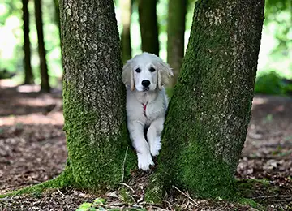
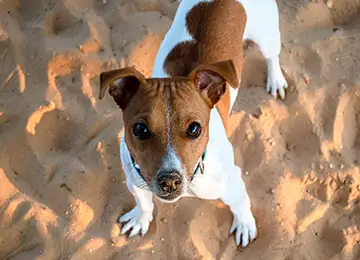

Pets para Adoção
Eles esperam ansiosamente por uma segunda chance de dar e receber carinho.
Eles esperam ansiosamente por uma segunda chance de dar e receber carinho.
Comprometidos com o bem-estar animal e a proteção de pets resgatados.
Doações de ração de alta qualidade para garantir a nutrição adequada de todos os animais abrigados.
Áreas de recreação seguras e socialização diária para manter os pets ativos e felizes.
Sessões regulares de banho e cuidados estéticos para manter a saúde da pelagem em dia.
Equipe especializada em buscar animais em situação de vulnerabilidade e risco nas ruas.
Atendimento clínico completo, vacinação em dia e castração obrigatória para todos os adotados.
Um espaço acolhedor e seguro onde os animais aguardam com conforto pela nova família.
Nascemos do amor incondicional pelos animais e do desejo de combater o abandono urbano. Nossa missão é reabilitar, cuidar e encontrar lares amorosos e definitivos para cada cão e gato resgatado das ruas.
Seja um VoluntárioVeja o que dizem as famílias que transformaram a vida de um pet adotado.

Adotar mudou completamente a nossa rotina. O carinho e a gratidão que nosso novo amigo demonstra todos os dias não têm preço!

O processo de adoção foi super transparente e seguro. A equipe nos orientou em cada etapa com muito amor e profissionalismo.

Salvar uma vida é a experiência mais gratificante do mundo. Recomendo a todos que apoiem a causa animal e adotem conscientemente.

Encontrei o companheiro perfeito para minhas caminhadas. Ele se adaptou super rápido à nossa casa e já faz parte da família!
Informações úteis sobre cuidados, saúde e comportamento animal.

Dicas essenciais para garantir um ambiente seguro e acolhedor para o novo membro da família.
Entenda como o protocolo de vacinas protege contra doenças graves e garante longevidade.

Saiba como adaptar a dieta conforme a idade do seu pet para manter sua vitalidade em alta.